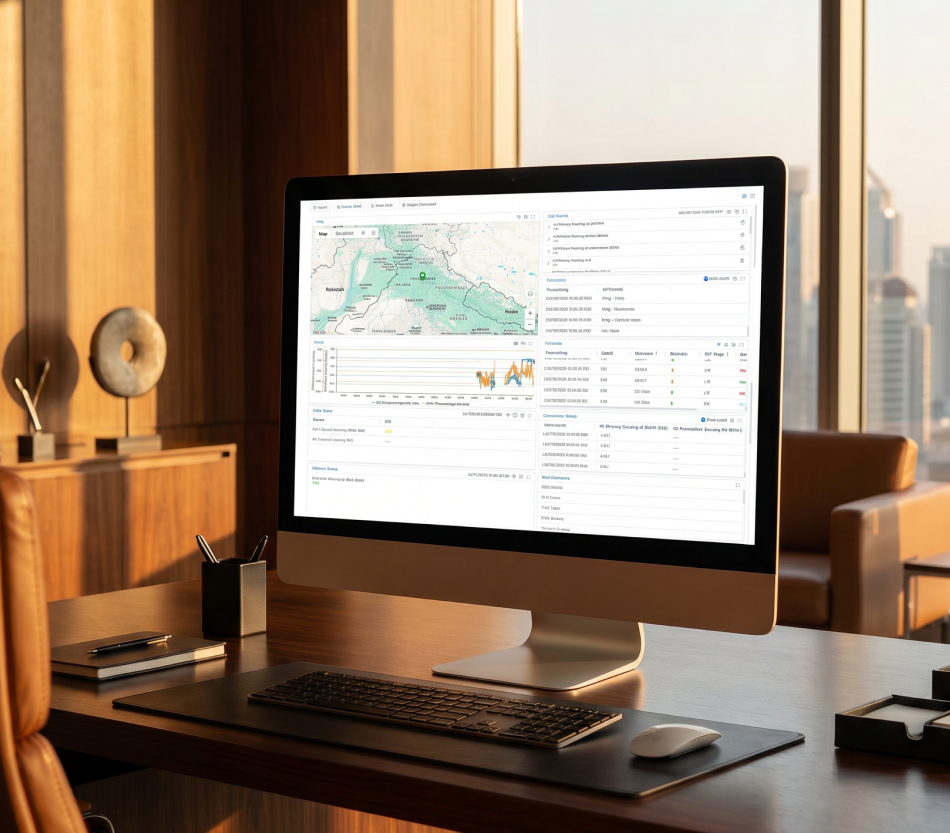

Wireless Portfolio / Analyse & Intelligence
Centra-SD
Centra-SD is the Linux-based analytics platform that gives the whole team a single view of all field activity — live data from every Sigma device in one dashboard, accessible from any browser. No installation. No VPN. Nothing to configure on the test side.

Overview
Centra-SD runs on Linux and serves the whole team through a browser — no client software, no per-machine configuration, no specialist hardware. Every field device — Sigma-LA, Sigma-ML, or Sigma-One — reports to the same dashboard in real time.
The engineer at a desk sees what the driver sees on the road. KPIs update as the drive happens. Reports are ready before the van gets back. One platform. Every device. Live.
Highlights
Every Sigma field device — AQ, Neo, One — reports into one dashboard. One login, one view, no switching between tools to understand what is happening in the field.
KPIs and map positions update in real time. The office sees what the field sees — simultaneously. No waiting for a session to close before data appears on screen.
Sigma-Neo, Centra-SD's built-in AI layer, detects anomalies, flags degraded cells, and answers network questions in plain language — every answer drawn from the data the platform already holds.
Automated report generation runs on schedule — no engineer action required. Reports are delivered before the field team returns, not hours after they do.
AI & Big Data
Centra-SD carries a big-data and machine learning layer that goes beyond monitoring. It builds models from your network data, predicts where problems will surface, and renders coverage predictions directly in the browser — without QGIS expertise. Then Sigma-Neo, the AI assistant built on top of Centra-SD, lets you ask what it all means in plain language.
Big Data architecture
Object Store with Apache Spark processes drive logs at scale. Bins data by time intervals (1, 10, and 60 seconds), extracts KPIs, and appends to a merged database for continuous historical access.
AI modelling
AI service creates models for parameters, bins, months, and years. Models predict RSRP and coverage patterns in areas that haven't been driven yet — identifying likely bad spots before sending a field team.
Polygon prediction & tile service
Select any area, create a polygon, and render instant coverage predictions as tiles in the web overview — no desktop GIS tool required. The 2021 model was validated against a 2025 drive test result.
Sigma-Neo
The AI chatbox layer on top of Centra-SD. Ask your network questions in plain language — and get answers drawn from the data the platform already holds.
Centra-SD brings live data collection, automated test scheduling, map-based KPI visualisation, and AI-driven network intelligence through Sigma-Neo — all in a single Linux-based platform — designed to be always-on, browser-accessible, and manageable without specialist hardware. The tabs below show what it collects, what it runs, and why teams replace three tools with one.
Three workflows where a live, intelligent platform does more than a dashboard. Each one shows what changes when the office can see the field in real time.
The optimisation engineer watches live KPIs from every drive simultaneously. Centra-SD flags the cells that are degraded while the van is still on the road — not in the post-processing report two hours later.
Read the storyTrack dozens of field devices across a benchmarking campaign from a single screen. Centra-SD shows coverage, route progress, and live KPIs per operator — the campaign manager stays in the office.
Read the storyCentra-SD runs continuously — receiving, analysing, and alerting without engineer intervention. The network team knows about a problem before the field team calls it in.
Read the storyNot case studies in the brochure sense. Short reads on what actually broke, what we changed, and the number that moved because of it.
Replace the war-room whiteboards. Schedule tests, watch KPIs come back live on the map, drill to the problem cell — all from a single browser tab.
Automated SSV, benchmarking, and cluster work with geographical control. Reports generated automatically on upload. Log archive for historical retrieval.
AI models built from historical drive data predict coverage in undriven areas. Polygon-based area selection, instant tile rendering in the browser — find the bad spots before dispatching the field team.